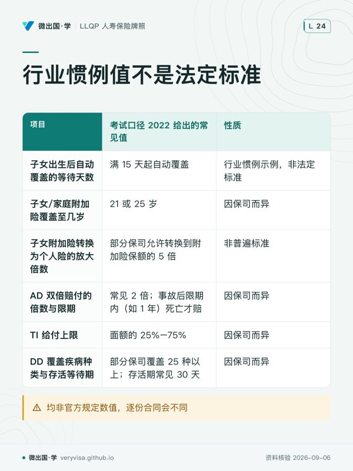

🃏 Flashcards · 3 闪卡 · 3 张 🖼 Slides · 2 幻灯 · 2 页 ✍️ Questions · 8 刷题 · 8 道
人寿保险 Life Insurance P2 稳住 P2 Hold steady
ZH EN ZH + EN
先看这一章怎么考 First, how this chapter is tested
生前给付对身故金的影响计算与辨析：给出客户的保单面额及绝症给付（TI）或重疾给付（DD）比例上限（如 50% 或最高 $50,000），考查加速身故金作为「预支」会等额扣减最终身故金，并与独立重疾险（CI）的额外独立赔付作对比。 Calculating and distinguishing the impact of living benefits on the death benefit: Given a client's policy face amount and an advance limit for a terminal illness (TI) or dread disease (DD) benefit (such as 50% or up to $50,000), test that an accelerated death benefit acts as an advance that reduces the ultimate death benefit dollar-for-dollar, and contrast this with the separate, additional payout of a stand-alone critical illness (CI) insurance policy. 投保人与被保险人分离时的豁免条款选择：设计父母为未成年子女投保、或配偶一方为另一方投保并交费的场景，测试考生能否区分普通完全伤残豁免（只保被保险人伤残）与父母/代付人豁免（保投保人身故或伤残）。 Selecting waiver of premium benefits when the policyholder and life insured are different: In scenarios where parents purchase coverage for minor children or one spouse purchases coverage and pays premiums for the other, test whether the candidate can distinguish between a standard waiver of premium for total disability (which covers only disability of the life insured) and a parent or payor waiver benefit (which covers the policyholder's death or total disability). 阶段性需求与长期需求的组合配置：给出客户既有终身税务需求又有 10 年期债务的场景，考查用终身寿险主险加定期险附加险（节省单次核保与 $50–$100 保单年费）的逻辑，以及主险退保或失效时依附型附加险与已缴清增额（PUA）的法律后果。 Structuring combinations of temporary and permanent needs: Given a scenario where a client has both lifelong tax liabilities and a 10-year debt obligation, test the rationale of combining a whole life base policy with a term insurance rider (saving duplicate underwriting and a $50 to $100 annual policy fee), as well as the legal consequences for dependent riders and paid-up additions (PUA) if the base policy lapses or is surrendered. 最常丢分的陷阱（看到题干信号就警觉） Traps that cost the most marks (watch for the signal in the stem)
附加险当独立保单（类别错配） Treating Riders as Standalone Policies (Category Mismatch) 题干出现主险失效（lapse）、到期（expire）或整单退保（surrender），问名下附加险或增额保障能否继续保留。 The question stem mentions base policy lapse, expiry, or full surrender, and asks whether attached riders or supplemental paid-up coverage can be maintained. 预支与另付混淆（产品混淆） Confusing Advances with Additional Payouts (Product Confusion) 题干问领取生前给付后，受益人最终能拿到的身故金（death benefit）如何变化，或对比附加重疾给付（DD）与独立重疾险（stand-alone CI）的赔付后果。 The question stem asks how the final death benefit received by beneficiaries changes after living benefits are paid, or compares an attached dread disease (DD) benefit with stand-alone critical illness (CI) insurance. 豁免对象张冠李戴（条款错配） Mismatched Waiver Insured Parties (Provision Mismatch) 题干出现父母为未成年子女投保、或夫妻一方为另一方投保并负责缴费，问付款人身故或完全伤残时如何确保保单不失效。 The question stem presents parents insuring minor children or one spouse insuring the other and paying premiums, asking how to keep the policy in force if the payor dies or becomes totally disabled. 本章考点页：导图、要点表、7 道带逐项解析的练习 →
核实日期：2026-09-06｜本页区分考试口径机制、已有官方来源与本次补核资料；未取得的完整合同不作保证，出处见文末来源清单。
复核周期：2027-01-31——附加险的公司间条款差异变动较快（2025-11 就有一款重疾险新品把 GIB 的行权规则改了），到期后应重新核一遍在售清单。
这一章解决什么问题
你要考的是 人寿保险模块 ，本篇对应 CISRO 能力组件 c2「分析可用产品」，占本模块 30% ——这是整个产品分析组件的权重，并非附加条款这一章单独占 30%。这一章讲的不是「有哪些附加险」的清单记忆题，而是一份主险之外，客户到底该不该多付这笔钱 ：每一种附加条款对应主险留下的哪一个具体缺口，触发它需要满足什么条件，条件不满足时它就是一份白买的纸。
这一篇帮你做到三件事：① 给一个客户画像，判断他现在最该配哪一两项附加险，而不是把清单上的都塞给他；② 理解考试口径以身故与生前保障组织本章的方式，同时知道实务中的 rider 也可能是重疾或保费豁免，名称不能代替触发条款；③ 看到「重疾附加险」这四个字，第一反应是去确认它会不会扣减身故金——这是全章最容易在柜台上被客户问倒、也最容易在考场上丢分的一处区分。
一、制度设计与底层逻辑 本节回答 This section answers 区分身故附加险与生前补充保障，掌握依附性、除外边界与预支机制 Distinguish death riders from living supplementary benefits, and master dependency rules, exclusion boundaries, and advance mechanisms. 本章考题 1 Question 1
1. 附加险不是「送」的，是「主险留了一个洞，用附加险去补」
图：附加险两条产品线——身故后追加与生前触发的机制不同
一张基础寿险保单——不论是定期险还是终身寿险——在核保时只回答一个问题：这个人死了，赔多少钱给谁 。但真实家庭的风险从来不止「死亡」这一种：孩子出生后需不需要立刻单独给孩子买一张保单？父母万一完全丧失工作能力，保费谁来交？诊断出重大疾病但还没到身故那一步，家里的现金流缺口谁来补？这些问题主险的核保逻辑答不了，考试口径把答案拆成两条产品线：
Riders（附加险） ：在被保险人身故后 追加给付，把基础身故金的覆盖面往外扩一圈（子女、意外、未来加保权）。Supplementary benefits（补充保障） ：在被保险人生前 就可能触发给付（重疾诊断、完全伤残、绝症），可能是预支身故金，也可能另付保险金或豁免保费。
这是考试口径的章节分类，不能当成市场命名规则。实务要分别查触发事件、领取人、是否减少身故金和是否需要另付保费；同样叫 rider 的条款，可能分别在死亡、疾病或伤残时生效。
2. 保险公司与客户在博弈什么：捆绑定价 vs 单独定价
同一份保障，作为附加险买通常比作为独立产品买便宜——这不是保险公司做慈善，而是捆绑销售把两笔本该分开的核保成本（一次核保信息、一份保单管理费）压缩成了一笔。但便宜的代价是依附性 ：绝大多数附加险不能脱离主险单独存在，主险失效、到期、被退保，附加险通常同时失效。这就是本章第一条底层逻辑：附加险用「失去独立性」换「更低的价格」 ，客户要不要接受这笔交换，取决于他要的到底是「现在最省钱」还是「将来最灵活」。
已缴清增额（paid-up additions, PUA）会增加永久保障与现金价值，是许多附加险不产生现金价值这一说法的例外；「已缴清」不等于退掉整张主保单后仍能独立存续。Canada Life 分红险指南把 PUA 的现金价值计入整张保单的退保价值：整单退保时按合同结算，包括相关增额保障，不能再把它当成一张仍有效的独立保单。
3. 法律后果：写在合同里的除外条款，不是保险公司耍赖的借口
意外身故附加险（accidental death, AD）几乎无一例外地把自杀、自伤、战争、犯罪行为列为除外情形，且通常要求死亡发生在事故后的限定时间内（考试口径举例常见值为 1 年）。这些除外不是保险公司事后找理由拒赔的手段，而是合同订立时就已经写死的边界 ——代理人的执业风险恰恰集中在「客户以为买的保障范围比合同实际写的更宽」这一处：把「意外身故附加险」讲成「出了什么事都多赔一倍」,是这一章最常见的销售误导起点。
⚠️
AD 与 AD&D 先分开看
AD 是意外身故给付；AD&D 还包括合同列明的意外肢体或功能损失，后者可以在被保险人生前按损失表支付。「双倍赔付」只是某些 AD 设计让总身故金达到基础保额两倍的说法，不是所有 AD&D 的定义。疾病身故不因此多赔，意外也仍须满足定义、时限与除外条款。
4. 生前给付类补充保障：把「将来才兑现的钱」提前搬到「现在最需要的时候」
加速身故金（accelerated death benefit）分两类：绝症给付（terminal illness, TI） 看的是「医生判断预期寿命是否已经进入合同规定的期限」，重疾给付（dread disease, DD，业界也称重疾险给付） 看的是「有没有诊断出合同列明的特定重大疾病并存活满规定的等待期」。两者共同的机制是预支 ：从最终身故金里先拿一部分出来，而不是额外多给一笔——这与本章反复强调的另一个概念形成鲜明对照，见下一小节。
5. 全章总览：一张表看清每一项附加条款解决什么、卡在哪、卖给谁
学到这里，先建立一张全景图，后面每一节都在往这张表里填细节：
节末检索小测 · 先别往回翻，凭记忆作答 Quick recall check: answer from memory before scrolling back
Marcus owns a whole life insurance policy that includes paid-up additions (PUA) and an accidental death (AD) rider. Facing a cash crunch, Marcus decides to surrender the base whole life policy for its cash surrender value, hoping to keep the paid-up additions and the AD rider in force as standalone coverage. How will the insurer treat his request?
Marcus 持有一份包含已缴清增额（PUA）和意外身故附加险（AD）的终身寿险保单。由于资金紧张，Marcus 决定将终身寿险主险退保以换取现金退保价值，但希望将已缴清增额和 AD 附加险作为独立保障继续保留。保险公司会如何处理他的要求？
a Both the paid-up additions and the AD rider will remain in force on their own, because their cost has already been paid in full. ✗ 错在「附加险当独立保单（类别错配）」陷阱。附加险（riders）依附于主险存续，已缴清增额（paid-up additions, PUA）的「已缴清」是指不需再交分期保费，绝不等于整张主保单退保后仍能独立存在，AD 附加险同样随主险终止而失效。 Incorrect. Falls into the Treating Riders as Standalone Policies (Category Mismatch) trap: Riders depend on the base policy to remain in force; paid-up in paid-up additions (PUA) means no further premiums are due, not that coverage can exist independently after full base surrender, and the AD rider likewise terminates upon base cancellation.
b The AD rider ends, and the paid-up additions' cash value is settled together with the base policy on surrender. ✓ 正确。绝大多数附加险不能脱离主险单独存在；当整张主保单退保（surrender）时，意外身故附加险（accidental death, AD rider）立即终止，而已缴清增额（paid-up additions, PUA）的现金价值会一并计入整张保单的退保价值进行结算，不能作为独立保单继续保留。 Correct. Most riders cannot exist apart from the base policy; upon full surrender of the base policy, the accidental death (AD) rider terminates immediately, and the cash value of paid-up additions (PUA) is settled as part of the total policy cash surrender value rather than maintained as an independent policy.
c The paid-up additions will continue as an independent permanent policy, while only the AD rider will terminate with the base. ✗ 错在把已缴清增额（paid-up additions, PUA）当成退掉主险后仍能独立存续的保单（类别错配）。整单退保时，PUA 的现金价值与相关增额保障会随主合同一起结算终止。 Incorrect. Treats paid-up additions (PUA) as policies that can survive independently after surrendering the base policy (Category Mismatch): Upon full surrender, PUA cash values and coverage terminate and are settled alongside the base contract.
d The AD rider can be kept in force by paying the annual policy fee on its own, while the paid-up additions must be cashed out. ✗ 错在违背了附加险的依附性原则（类别错配）。意外身故附加险（AD rider）用失去独立性换取更低的价格，主险退保后无法通过单独缴纳保单年费（policy fee）让 AD 附加险独立存续。 Incorrect. Violates the rider dependency principle (Category Mismatch): The accidental death (AD) rider trades independence for lower pricing; once the base policy is surrendered, the AD rider cannot be maintained independently by paying the policy fee alone.
看答案与每个选项的解析 Show the answer and why each option is right or wrong 答案 Answer ：b
二、2026 现行政策与数字 本节回答 This section answers 掌握重疾定义基准的自愿属性、GIB双口径触发与行业惯例数值 Understand the voluntary nature of critical illness benchmark definitions, dual GIB trigger standards, and industry benchmark numbers. 本章考题 2 Question 2
1. CLHIA 重疾定义基准：现行版本是 2024 Final，采用与否各保司自愿
考试口径把重疾给付的覆盖门槛概括为「Big 4」（心脏病发、中风、冠状动脉搭桥、危及生命的癌症），并提到部分保司覆盖多达 25 种以上疾病。行业里长期流传「CLHIA 有一份重疾定义标准化 benchmark，统一了各保司对『心脏病发』『中风』这些术语的最低定义」的说法——CLHIA 官网 Consumer Guides 栏目确认这份文件确实存在：CI Benchmark Definitions ，现行版本 2024 Final （此前有 2018 Final 与 2013 Final 两版），且明文写明「采用与否、采用哪个版本，各保司自愿决定」（Canadian Life and Health Ins… ）。
ℹ️
存在带版本号的官方文件，不等于各保司统一执行
CLHIA 确实在长期推动重疾定义的行业协调，现行基准是 2024 Final。但这份基准对会员公司不是强制标准 ——柜台遇到客户问「你们家的『心脏病发』定义和别家一样吗」，正确答案不是背一个版本号，而是逐条对比这份合同的重疾定义清单原文 ——这本来就是第三节要讲的「公司间差异」。
2. 子女定期险：考试口径示例与具体合同分别看
考试口径以固定单位举例，帮助考生理解同一附约覆盖合资格子女、保费不随子女人数增加的机制。现行合同仍有这种安排：Canada Life 2026 年分红险顾问指南列出的子女附约可选 $10,000–$25,000，保费为固定金额，不按子女人数计费；可投保子女年龄为出生 15 天至最近生日年龄 17 岁。保障终止与转换另有年龄和周年日规则。上述数字只适用于该指南对应产品，不能套到所有定期险或所有公司的子女保障。
官网教育文章中单独一个 increasing，不能证明保额随时间自动递增。要向客户承诺自动增长，必须拿到附约保额表，看到每个时点怎样增长、要不要追加保费及何时停止。
3. 考场与现行对照表之二：GIB 的行权触发条件——特定产品可在周年日或人生事件行权
✕
GIB 放宽的是「触发条件」，没有放宽「申请时限」
这是本节最容易被误读的一处：iA 这款新品把「什么时候可以要求加保」这件事从「只认周年日」放宽成了「周年日 or 人生事件」，但「申请之后必须多快提交」这条时限（31 天）两种触发方式都一样严格 。不要把「触发条件放宽了」误读成「整个流程都变宽松了」。
4. 考试口径给出的行业惯例值一览（均非官方规定数值，逐份合同会不同）
节末检索小测 · 先别往回翻，凭记忆作答 Quick recall check: answer from memory before scrolling back
Clara is comparing dread disease (DD) benefits across two insurers and asks her advisor whether the industry benchmark definitions published by the Canadian Life and Health Insurance Association (CLHIA) guarantee that both contracts define a covered heart attack identically. How should the advisor respond?
Clara 正在比较两家保险公司的重疾给付（DD）条款，她向顾问询问加拿大寿险与健康险协会（CLHIA）发布的行业重疾定义基准是否保证了这两份合同对「心脏病发」的定义完全一致。顾问应当如何回答？
a Yes, all member insurers are legally required to adopt the 2024 Final benchmark definitions word for word in every contract. ✗ 错在将行业协调文件当成法定强制标准。虽然 CLHIA 重疾定义基准（CLHIA CI Benchmark Definitions）现行版本为 2024 Final，但各保险公司是否采用以及采用哪个版本完全属于自愿决定。 Incorrect. Treats an industry coordination document as a mandatory statutory standard: Although the current version of the CLHIA CI Benchmark Definitions is 2024 Final, whether an insurer adopts it and which version it uses is entirely voluntary.
b Yes, for the four core conditions known as the Big 4, the definitions are required by law to be identical across all insurers. ✗ 错在混淆了考试概括术语与法律强制规定。考试口径用「Big 4」（心脏病发、中风、冠状动脉搭桥、危及生命的癌症）概括常见重疾门槛，但这并非法定最低病种或强制统一措辞。 Incorrect. Confuses exam summary terminology with statutory mandates: The exam uses the Big 4 (heart attack, stroke, coronary artery bypass surgery, and life-threatening cancer) to summarize common critical illness benchmarks, but this is neither a statutory minimum condition list nor mandatory wording.
c No, the 2024 Final benchmark exists but insurers adopt it voluntarily, so each contract's own wording must be checked. ✓ 正确。CLHIA 重疾定义基准（CLHIA CI Benchmark Definitions）现行版本虽为 2024 Final（此前有 2018 与 2013 版），但明文规定各保司自愿采用；因此面对客户询问时，不能背版本号代替核对，必须逐条对比具体合同的重疾定义原文（differences between companies）。 Correct. While the current edition of the CLHIA CI Benchmark Definitions is 2024 Final (preceded by 2018 and 2013 editions), guidelines explicitly state that adoption is voluntary for each insurer; therefore, advisors cannot rely on benchmark labels and must verify the exact contractual critical illness definitions for each company.
d No, benchmark definitions only apply to stand-alone critical illness policies and never to dread disease riders. ✗ 错在捏造适用范围限制。CLHIA 重疾定义基准（CLHIA CI Benchmark Definitions）作为行业参考可用于重疾相关条款，核心在于其自愿采用属性，而非禁止用于重疾附加险（dread disease, DD）。 Incorrect. Fabricates a scope restriction: The CLHIA CI Benchmark Definitions serve as an industry reference for critical illness provisions; the key point is their voluntary adoption, not any prohibition against applying them to dread disease (DD) riders.
看答案与每个选项的解析 Show the answer and why each option is right or wrong 答案 Answer ：c
三、实务流程：从需求分析到保单存续期，附加险在每一步扮演什么角色 本节回答 This section answers 理清需求分析、配偶单独核保、收费方式区分及豁免期保单权益运作 Clarify needs analysis principles, separate spouse underwriting, pricing distinctions, and policy rights operation during premium waiver periods. 本章考题 3 Question 3
1. 需求分析阶段：先分清「基础保额缺口」与「阶段性缺口」
需求分析给出的保额缺口应该由基础保额 全额覆盖，而不是指望某个附加险的赔付去「凑数」——这是本章价值权衡一节反复强调的一条：遗属实际需要的钱，不因被保险人死于意外还是疾病而改变 。附加险真正该解决的是另一类问题：阶段性、局部性的缺口 。典型场景是一位客户同时有「企业股权的长期税负」与「10 年房贷」两个需求：与其分别买一张终身寿险和一张定期险（两次核保、两笔保单费），不如在一张终身寿险主险上附加一张定期险附加险，覆盖房贷这 10 年的阶段性需求，房贷还清后附加险到期，终身险继续覆盖长期需求——单一保单费、单一核保信息，通常比两张独立保单更省钱。
2. 核保阶段：附加险不是自动生效的，他人身上的附加险要单独核保
定期险附加险如果覆盖的是被保险人本人，通常沿用主险的核保结果；但如果客户想在自己的保单上附加一份覆盖配偶或其他人的定期险，这个「其他人」需要单独核保 ——这条经常被销售环节忽略，导致客户以为「买了主险就等于配偶也保了」，直到理赔时才发现配偶那部分因为从未核保而无效。
3. 投保时：把「免费内建」和「另外收费」分清楚
不能按「rider / supplementary benefit」的名字判断收费方式。某些绝症给付包含在基础合同里；保费豁免也可能是另外付费选购的附约。Canada Life 指南把被保险人及付款人的豁免列为可选保障，并提示查看适用样本合同。报价时应把基础保费、每项附约费用及内建权益逐一对应，让客户知道取消哪项会省多少钱、失去哪种保障。
4. 保单存续期：附加险到期、转换、豁免三条线各自独立运作
节末检索小测 · 先别往回翻，凭记忆作答 Quick recall check: answer from memory before scrolling back
Devon owns a participating whole life insurance policy with a waiver of premium for total disability benefit. Two years after purchasing the policy, Devon becomes totally disabled and satisfies the waiting period. While his premiums are being waived by the insurer, what happens to his policy's cash value growth and dividends?
Devon 持有一份附带完全伤残豁免保费条款的分红终身寿险保单。投保两年后，Devon 完全伤残并满足了等待期要求。在保险公司豁免其保费期间，他保单的现金价值增长和保单分红会如何变化？
a The policy is frozen during the waiver period, so cash values and dividends stop accumulating until Devon recovers. ✗ 错在误以为「豁免保费」等于「保单被冻结」。在完全伤残豁免保费（waiver of premium for total disability）生效期间，保单的各项既有权益照常运作，不会暂停累积。 Incorrect. Mistakenly assumes waiving premiums freezes the policy: While a waiver of premium for total disability is in effect, all policy rights and values continue to accumulate normally rather than being suspended.
b Dividends and cash values keep growing, and other riders stay in force, as if Devon were still paying premiums. ✓ 正确。当被保险人进入完全伤残豁免期（waiver of premium for total disability）后，虽然停止缴纳保费，但保单本身并未冻结，其分红（dividends）、现金价值（cash value）增长以及其他附加险效力均照常运作。 Correct. Once the life insured qualifies for a waiver of premium for total disability, premiums stop, but the policy is not frozen; dividends, cash value growth, and other attached riders continue to operate as if premiums were being paid.
c The waived premiums are treated as an automatic policy loan that reduces the cash value and the future death benefit. ✗ 错在把完全伤残豁免保费（waiver of premium for total disability）与自动垫交保费贷款混为一谈。豁免是由保险公司承担保费责任，不会产生扣减现金价值的保单贷款。 Incorrect. Confuses a waiver of premium for total disability with an automatic premium loan: The insurer assumes premium obligations under the waiver, creating no policy debt or cash value deduction.
d The base death benefit remains intact, but all dividends must be surrendered to the insurer to offset the waived premiums. ✗ 错在编造分红抵扣规则。在完全伤残豁免保费（waiver of premium for total disability）期间，保险公司不得要求没收客户的保单分红来抵充被豁免的保费。 Incorrect. Fabricates a dividend forfeiture rule: Under a waiver of premium for total disability, the insurer cannot seize policy dividends to offset waived premiums.
看答案与每个选项的解析 Show the answer and why each option is right or wrong 答案 Answer ：b
四、2026 市场：谁在卖，附加险叫什么名字 本节回答 This section answers 识别市场附加险模块组合、GIB向重疾扩散及单次与累计限额关系 Identify market rider combinations, expansion of GIB into critical illness, and the interplay between single and cumulative limits.
以下列出官方资料能支持的产品示例。登记于 2026-09-04 的来源沿用其抓取日；2026-09-06 补核 Canada Life 指南与 iA 产品页。教育介绍不等于完整在售清单，未取到的合同细目另标边界。
RBC Insurance （rbcinsurance.com 官方附加险教育页，页面标注更新日 2026-05-28，RBC Insurance ）——官方教育页介绍六类保障安排；这不是每款 RBC 产品的在售附约清单：意外身故（Accidental Death Rider） （官网原文：因意外死亡时，受益人在基础身故金之上额外获得一笔给付）、重疾附加险（Critical Illness Rider） （达到所保疾病的合同定义，并满足适用等待期及存活期后，才可申请一次性给付）、定期险附加险（Term Insurance Rider） （在主险之上提供一段限定期限的额外临时保障）、子女定期险附加险（Children's Term Rider, CTR） （官网称之为「最经济的方式之一」为子女提供保障）、保证可保利益（Guaranteed Insurability Rider） （未来约定时点免核保加保）、以及考试口径本章未列但常与本章附加险搭配销售的联合首身故保障（Joint First-to-Die Coverage） （一张保单覆盖两人，第一人身故即赔付）。
它解决考试口径里的哪个概念：这六项与考试口径 5.1–5.2 的分类逐一对应（前五项覆盖 rider 与部分 supplementary benefit），RBC 官网把子女附加险明确定位为「最经济」的定制方式，与考试口径 5.3.1「附加险通常比同类独立产品便宜」的说法一致。
Canada Life ——公开分红险顾问指南列出保证可保利益、子女保障及保费豁免等选项。子女保障的具体金额见上文；不把分红险附约自动套到 My Term。GIB 可允许多次行权，但这不与考试口径的单次限额矛盾：一次能买多少、最多能买几次、累计能买多少是三个不同约束，应同时核对。
iA Financial Group （ia.ca 官方 Pick-a-Term 定期险产品页，iA Financial Group ；及 iA Connected 官方顾问资讯站，iA Financial Group（iA Connec… ）——Pick-a-Term 定期险可选附加险清单完整覆盖本章大部分类型：保费豁免 （投保人或被保险人在 60 岁前完全伤残，且持续超过 6 个月，或投保人于 65 岁前身故，两种触发条件合并在同一条款里——同时对应考试口径 5.2.3 完全伤残豁免与 5.2.4 父母/代付人豁免两种机制）、保证可保利益 （限购买永久险）、子女模块（Child Module） （子女定期险，覆盖至 25 岁或父母 65 岁孰先）、子女重疾 （页面将未来出生的子女纳入家庭保障安排，实际起保年龄及疾病定义须看合同）。更值得记住的一条是 2025-11-24 上市的独立重疾险产品 Transition 6 ：它提供重疾保障的 GIB 选项，且把行权触发条件从「只认固定周年日」放宽为「人生事件也可以提前触发」（细节见第二节考场与现行对照表）。
它解决考试口径里的哪个概念：iA 把考试口径分开讲的「子女定期险」与「子女重疾」做成了同一产品线下的两个独立子模块，而 Transition 6 展示的是「GIB 这条机制正在从人寿产品扩散到重疾险产品」——这是这款产品的具体设计，不能推导出整个市场首次引入这一机制。
Manulife ——本页不列其现行附约细目：既有登记只有搜索摘要，未取得足以确认当前适用产品及版本的完整合同。需要报价时，应先取对应产品附约，逐项确认收费、保障对象与终止条件。
节末检索小测 · 先别往回翻，凭记忆作答 Quick recall check: answer from memory before scrolling back
An advisor is reviewing a client's guaranteed insurability benefit (GIB) rider that allows multiple option exercises over the life of the policy. The client believes that because multiple exercises are permitted, there is no restriction on how much coverage he can add at a single option date. Which statement accurately describes how GIB limits operate?
一位顾问正在审阅客户的保证可保利益（GIB）附加险，该条款允许在保单有效期内多次行权。客户认为，既然允许分多次行权，那么在单次行权日可以加保多少保额就没有限制。下列哪项准确描述了 GIB 限额的运作机制？
a Allowing multiple exercises removes the single-exercise limit, so only a maximum age restriction is left to check. ✗ 错在混淆不同维度的约束条件。在保证可保利益（guaranteed insurability benefit, GIB）中，允许行使多次权利绝不等于取消单次加保上限（single-exercise limit）。 Incorrect. Confuses different restriction dimensions: Under a guaranteed insurability benefit (GIB), allowing multiple option exercises does not eliminate the single-exercise coverage limit.
b The per-exercise limit, the number of exercises and the total limit are separate constraints, all to be checked. ✓ 正确。对于保证可保利益（guaranteed insurability benefit, GIB），一次最多能买多少（单次限额）、最多能买几次（次数上限）、累计总共能买多少（累计限额）以及最高行权年龄是相互独立的约束条件，允许多次行权与存在单次限额并不矛盾，必须同时核对。 Correct. Under a guaranteed insurability benefit (GIB), the maximum amount per option date (single limit), maximum number of options, overall cumulative limit, and maximum exercise age are independent contractual constraints; permitting multiple option dates coexists with single-exercise caps, and all must be verified.
c A policy can enforce either a single-exercise dollar limit or a cumulative dollar limit, but never both at the same time. ✗ 错在臆造二选一规则。保证可保利益（GIB）合同通常会同时设定单次限额（single limit）与累计限额（cumulative limit）来控制逆选择风险。 Incorrect. Fabricates an either-or rule: Guaranteed insurability benefit (GIB) contracts routinely establish both single-exercise limits and cumulative limits to manage anti-selection risks.
d Once the client exercises the GIB option for the first time, all remaining option dates are automatically forfeited. ✗ 错在把单次行权当成一次性作废条款。只要未达到保证可保利益（GIB）合同约定的次数上限、累计保额上限和最高年龄，后续约定周年日或触发事件仍可继续行权。 Incorrect. Treats a single option exercise as forfeiting all future options: As long as the contract maximum option count, cumulative cap, and maximum age have not been reached, remaining option dates or qualifying events remain available.
看答案与每个选项的解析 Show the answer and why each option is right or wrong 答案 Answer ：b
五、历史变革：这一章为什么要跟着市场重新看一遍 本节回答 This section answers 不靠附加险名称断定是否扣减身故金，区分考试机制与当期合同信息 Avoid judging death benefit reductions solely by rider labels, and differentiate exam mechanics from current contract terms.
其一，名称不能代替现金流。 加速身故金按设计减少后续身故金；独立重疾险按自己的合同赔付。有些附加在寿险上的 CI 保障同样另付保险金，因此不能用「附加」二字直接判定扣减。分析时画出一次重疾给付前后的身故保额，再核对主险是否继续有效，比背一个产品标签可靠。
其二，GIB 的行权时间是合同约定的，周年日并不随机。 iA 的具体版本增加了指定人生事件选项，但这不证明人生事件加保是 2025 年才首次出现。考试口径讲单次与累计限制，是机制；公司说明某个版本可何时行权，是合同信息，两者不能写成互相推翻。
其三，考试口径的产品举例与现行在售条款之间存在自然的时间差。 考试口径定稿于 2022 年，本页写作时点是 2026 年——四年里保司会新增产品、下架产品、调整某一条款的具体数字。本章的处理方式与全库一致 ：结论落在机制上（附加险解决什么需求、依附主险还是独立存续、触发条件是什么），具体的公司名与产品名只作当年市场快照，标注核实日期并挂复核周期。
节末检索小测 · 先别往回翻，凭记忆作答 Quick recall check: answer from memory before scrolling back
Nora holds a life insurance policy with an attached critical illness coverage rider. When she asks whether a critical illness payout will reduce her life insurance death benefit, her junior agent replies, "Because it has the word 'rider' in its name, it automatically deducts from the death benefit." Why is the junior agent's reasoning flawed?
Nora 持有一份附加了重疾保障条款的寿险保单。当她询问重疾理赔金是否会扣减她的寿险身故金时，初级代理人回答：「因为它的名字里有『附加险（rider）』这个词，所以它会自动从身故金里扣减。」为什么这位初级代理人的推理是错误的？
a Because any coverage labelled as a rider is legally required to pay an extra amount without ever reducing the base death benefit. ✗ 错在走入另一个极端（产品混淆）。实务中叫附加险（rider）的条款既可能是预支身故金的加速身故金（accelerated death benefit），也可能是另付保险金的条款，不能仅凭名字一概而论。 Incorrect. Swings to the opposite extreme (Product Confusion): In practice, provisions labelled riders may be accelerated death benefits that advance funds from the death benefit, or riders that pay separate additional benefits; one cannot generalize based on terminology alone.
b Because a label cannot replace checking the cash flow: some CI riders pay separately, while accelerated DD benefits deduct. ✓ 正确。名称不能代替现金流机制：加速身故金下的重疾给付（dread disease, DD benefit）按设计会扣减后续身故金，但市场上有些附加在寿险上的重疾附加险（critical illness, CI rider）与独立重疾险一样另付保险金而不扣减身故金，因此必须核对合同给付前后的身故保额与主险存续状态。 Correct. Labels cannot substitute for cash flow mechanics: While dread disease (DD) benefits under accelerated death provisions deduct payouts from the death benefit, some critical illness (CI) riders attached to life policies pay an additional benefit without reducing the death benefit; advisors must examine the contract wording regarding death benefit reductions and base policy status.
c Because critical illness riders only waive future life insurance premiums and never pay out a lump-sum cash benefit at all. ✗ 错在把重疾给付（dread disease / critical illness rider）与完全伤残豁免保费（waiver of premium for total disability）混淆。重疾条款在满足疾病定义与存活期后提供一次性给付。 Incorrect. Confuses a critical illness or dread disease rider with a waiver of premium for total disability: Critical illness provisions pay a lump sum upon satisfying diagnosis definitions and survival periods rather than waiving periodic premiums.
d Because only stand-alone critical illness policies deduct from the life insurance death benefit, whereas riders never do so. ✗ 错在完全颠倒了独立重疾险（stand-alone CI insurance）与预支型重疾给付（DD benefit）的机制（产品混淆）。独立重疾险按独立合同赔付，绝不会扣减另一张寿险的身故金。 Incorrect. Completely reverses the mechanisms of stand-alone CI insurance and advance-based DD benefits (Product Confusion): Stand-alone critical illness insurance pays under an independent policy and never deducts from a separate life insurance death benefit.
看答案与每个选项的解析 Show the answer and why each option is right or wrong 答案 Answer ：b
六、案例 本节回答 This section answers 在真实场景中演练定期险附加险配比、代付人豁免纠偏与子女转换权 Practice term rider sizing, correcting payor waiver selections, and child conversion rights in realistic scenarios. 本章考题 4 Question 4
案例 A：定期险附加险覆盖阶段性需求（示例）
高贵林(Coquitlam)的企业主 Zoltan，名下公司有需要股东身故税务清算的股权结构，同时还有一笔 10 年后到期的商业按揭。代理人的方案是：一张终身寿险主险覆盖股权税负这个长期需求，附加一张 10 年期的定期险附加险专门覆盖按揭。
适用规则 ：定期险附加险依附主险存续，主险到期或失效附加险同时失效；本例里附加险自己也有独立的 10 年期限，与按揭年限对齐。
结果 ：10 年后按揭还清，定期险附加险到期，Zoltan 不需要再为这部分保障付费；终身险主险继续为股权税负提供终身覆盖。全程只用一张保单、一次核保。
常见错法 ：把这个方案理解成「两份独立保单打包卖」——不是。它是一张主险加一张附加险，只有一份保单费，且附加险的核保信息与主险共用，这正是考试口径强调「附加险通常比同类独立产品便宜」的具体来源。
案例 B：投保人≠被保险人时，用错豁免条款（示例）
素里(Surrey)的 Anand 是家庭主要收入来源，妻子 Priya 全职照顾三个孩子。Anand 名下有一张 $1,000,000 的终身寿险（被保险人是他自己），也有一张 $300,000 的定期险，被保险人是 Priya——因为 Anand 判断，万一 Priya 身故，他需要额外雇人照顾孩子。他在自己的保单上加了完全伤残豁免保费 ，却在 Priya 的保单上也想加同一条款。
适用规则 ：关键是条款豁免针对谁的伤残。若 Priya 保单上的普通豁免只以她本人伤残为触发，就不能解决 Anand 无法付款的问题；应核对是否可配置父母/代付人豁免（parent/payor waiver） ，触发条件是投保人（Anand）本人伤残或身故，而不是被保险人（Priya）伤残。
结果 ：代理人及时纠正，在 Priya 那张保单上加了代付人豁免——若 Anand 达到两份合同规定的伤残触发条件，获批后可豁免相应保费；若 Anand 身故，他自己作为被保险人的寿险按合同给付后终止，Priya 的保单则可按代付人死亡豁免条款继续。
常见错法 ：把「豁免保费」当成一种保单，不管投保人是谁一律加同一款——两种豁免条款的触发对象完全不同，加错了在真正需要理赔时才会发现保障是空的。
案例 C：子女附加险的转换权，反过来保护了「已经不可保」的孩子（示例）
列治文(Richmond)的一个家庭在女儿 Mia 出生时买了家庭附加险里的子女保障。Mia 8 岁时确诊先天性心脏病，此后在个人保险市场上属于「实质不可保」——任何一家保险公司单独给她核保大概率会拒保或大幅加费。Mia 22 岁那年，父母在子女附加险到期前为她行使了转换权。
适用规则 ：子女附加险的转换权允许在附加险到期前，将保障转换为子女本人名下的个人永久险，免核保 ，保费按转换时的年龄计算，不因健康状况恶化而加费；部分保单还允许转换保额放大到原附加险保额的 5 倍。
结果 ：Mia 拿到了一份她凭自己的健康状况根本买不到的个人永久险，保费还是标准费率。
常见错法 ：以为「实质不可保」的人不可能获得任何新保单——恰恰是这条转换权条款，把逆选择保护机制反过来用在了保护投保人这一侧,是这一章里唯一一处「越是健康状况差，这个条款的价值越大」的设计。
节末检索小测 · 先别往回翻，凭记忆作答 Quick recall check: answer from memory before scrolling back
Hannah and her husband Leo have a son, Lucas, who was covered under a child coverage rider added to Hannah's life policy at birth. At age 8, Lucas was diagnosed with a chronic heart condition that made him uninsurable in the individual market. As Lucas approaches the rider's expiry age of 21, how can the family secure permanent life insurance for him?
Hannah 和丈夫 Leo 的儿子 Lucas 出生时就被纳入了 Hannah 寿险保单下的子女附加险保障。Lucas 在 8 岁时被诊断出患有慢性心脏病，导致他在个人保险市场上实质不可保。当 Lucas 临近该附加险 21 岁的到期年龄时，这个家庭如何为他获得永久寿险保障？
a Exercise the child rider's conversion right before it expires, getting him a permanent policy at standard rates with no medicals. ✓ 正确。子女附加险转换权（converting child coverage rider）允许在附加险到期前（如 21 岁前），免核保（without evidence of insurability）将保障转换为子女本人名下的个人永久险（部分保单允许放大至原保额 5 倍），保费按转换时年龄的标准费率计算，不因健康恶化加费。 Correct. The child rider conversion privilege allows converting coverage before rider expiry (such as before age 21) into an individual permanent policy on the child without evidence of insurability (often permitting up to 5 times the rider face amount), with premiums calculated at standard rates for the attained age without health ratings.
b Wait until 31 days after the rider expires at age 21, then apply for a new term policy and accept a health surcharge on it. ✗ 错在「时限压缩」陷阱。子女附加险转换权（converting child coverage rider）必须在附加险到期前（before expiry）的合同窗口内行使，一旦过期错过窗口，实质不可保的子女将失去免核保保护。 Incorrect. Falls into the Compressed Timeframe trap: The child rider conversion privilege must be exercised within the contractual window before rider expiry; once expired, an uninsurable child loses the right to obtain coverage without medical evidence.
c Convert the rider into a permanent policy with premiums locked in at the newborn rate from when Lucas was 15 days old. ✗ 错在「术语误读」陷阱。免核保转换（converting child coverage rider）承诺的是不因健康状况恶化而拒保或加费，但新永久险的保费必须按转换当时的年龄（如 21 岁）定价，而非出生满 15 天时的费率。 Incorrect. Falls into the Terminology Misinterpretation trap: Conversion without evidence of insurability guarantees no decline or rating due to poor health, but premiums for the permanent policy are priced based on the attained age at conversion (such as age 21), not rates at 15 days of age.
d Add a parent/payor waiver benefit to Hannah's policy, which automatically extends Lucas's child rider coverage for life. ✗ 错在「条款错配」陷阱。父母/代付人豁免（parent/payor waiver benefit）解决的是投保人身故或伤残时的保费豁免问题，并不能把有期限的子女附加险变成终身保障。 Incorrect. Falls into the Provision Mismatch trap: A parent/payor waiver benefit waives premiums upon the death or disability of the policyholder, but cannot convert a temporary child rider into permanent coverage.
看答案与每个选项的解析 Show the answer and why each option is right or wrong 答案 Answer ：a
七、考试陷阱与考场与现行对照清单 本节回答 This section answers 排查十大高频陷阱（类别、范围、预支、跨章、窗口）与四项双口径 Screen for top high-frequency traps (category, scope, advances, cross-chapter, windows) and four dual-standard distinctions.
附加险是附加、不是独立保单 （陷阱形态：类别错配）。附加险绝大多数不能脱离主险单独存在，主险失效附加险通常同时失效；整单退保时 PUA 也要结算。识别方法：题干问「这份附加险还有效吗」，先看主险的状态。
AD&D 只赔意外，不是所有死因都多赔 （陷阱形态：范围夸大）。见第一节提示框。识别方法：题干出现「意外身故附加险」时，先确认题干给出的死因是不是意外。
DD/TI 会扣减身故金，独立 CI 保单不会 （陷阱形态：产品混淆）。考试口径反复强调的关键区分——加速身故金是「预支」，独立重疾险是「额外给付」。识别方法：题干问「这笔重疾给付会不会影响将来的身故金」，先查这是预支身故金还是另付 CI 保险金；CI 即使采用附约形态，也不必然减少身故金。
团体险「own occupation」不是这一章的内容，但常与本章的残疾定义混淆 （陷阱形态：跨章串味）。完全伤残豁免保费用的是「完全伤残」这个门槛，与伤残收入险那一章的四级残疾定义光谱是两套不同的判据，不要把两章的门槛混着用。
保费豁免未必免费，要核对是否单独收费 （陷阱形态：定价误解）。识别方法：题干问「豁免保费条款要不要另外收费」，正确理解是「可能另行收费，也可能内建，须看报价与合同」，不是「完全不影响保费」。
子女附加险转换权有合同窗口，不能假定只限到期日，也不能假定任何时候都能转换 （陷阱形态：时限压缩）。见案例 C。识别方法：题干给出「到期前」这个措辞，说明的是一段窗口而不是一个时点。
未来出生的子女可纳入家庭安排，不能推定出生前已可理赔 （陷阱形态：范围低估）。子女重疾与部分子女定期险条款明确覆盖「living or unborn child」——识别方法：题干出现「怀孕」「即将出生」，先看题干合同的起保年龄与生效条件，不把「未来子女可加入」等同「产前疾病必赔」。
GIB 的「保证」指的是免核保，不是免费 （陷阱形态：术语误读）。加保时仍按当时年龄定价，只是不需要重新提交健康证明。识别方法：题干问「GIB 加保后保费会不会涨」，正确答案是「会按新年龄涨，只是不会因健康变差而额外加费」。
附加险比独立产品便宜，不等于附加险性价比总是更高 （陷阱形态：以偏概全）。见第七节最后一道组合题的展开逻辑。识别方法：题干如果同时给出「价格」与「限制/除外条款」两组信息，价格便宜不能单独作为选择理由。
父母/代付人豁免与普通豁免的触发对象不同 （陷阱形态：条款错配）。见案例 B。识别方法：先确认题干里「谁的健康出了问题」，再判断该用哪一种豁免。
考场与现行对照清单（考场 vs 柜台） ：① 子女定期险保额结构——考场按考试口径「固定单位」答，柜台按实际附约保额表核对，不能从教育页单词推定自动递增（第二节表一）；② GIB 行权触发条件——考场按考试口径「固定周年日」答，柜台需先确认是不是 2026 年新式「人生事件触发」条款（第二节表二）；③ 重疾定义清单——考场按考试口径「Big 4」答，柜台必须逐条核对这份合同实际列明的疾病清单，不能假设各家统一（CLHIA 2024 Final 基准存在但各家采用自愿）；④ 保证可保权利的加保次数——考场按考试口径「单次/累计限额」的通用逻辑答，柜台需核实这份合同是否像部分现行产品一样允许多次加保。
边学边测 ：本章题库共 52，覆盖三层难度与情景选择、计算、辨析、除外型多种题型。
节末检索小测 · 先别往回翻，凭记忆作答 Quick recall check: answer from memory before scrolling back
While reviewing a practice question on the waiver of premium for total disability attached to an individual life insurance policy, Kevin tries to apply the four-tier disability definition spectrum (including regular occupation and any occupation) from the disability income insurance module. What trap is Kevin falling into?
在复习一道关于个人寿险保单所附完全伤残豁免保费条款的练习题时，Kevin 试图套用伤残收入险模块中的四级残疾定义光谱（包括本职工作与任何工作）。Kevin 掉进了哪一个考试陷阱？
a Confusing accelerated death benefits with stand-alone critical illness insurance when the two pay out in different ways. ✗ 错在张冠李戴。预支型加速身故金（accelerated death benefit）与独立重疾险（CI）的混淆属于重疾给付的产品混淆陷阱，与伤残豁免定义无关。 Incorrect. Mismatches concepts: Confusing advance-type accelerated death benefits with stand-alone critical illness insurance is a product confusion trap specific to living benefits, unrelated to disability waiver definitions.
b Mixing chapters: the life policy waiver uses the contract's total disability test, not the four-tier income spectrum. ✓ 正确。这属于典型的「跨章串味」陷阱：寿险章节的完全伤残豁免保费（waiver of premium for total disability）使用的是合同定义的「完全伤残（total disability）」并持续满等待期这一门槛，与伤残收入险章节的四级残疾定义光谱（如 own occupation 等）是两套不同的判据。 Correct. A textbook example of the Cross-Chapter Conflation trap: Waiver of premium for total disability in life insurance uses the contractual total disability threshold sustained through the waiting period, which operates under different criteria than the four-tier disability definition spectrum (such as own occupation) in disability income insurance.
c Assuming that a waiver of premium benefit is always built into the base policy for free and never shown as a separate charge. ✗ 错在偏离题干核心。虽然误以为保费豁免免费属于「定价误解（cost of coverage）」陷阱，但题干问的是套用跨章残疾定义的行为。 Incorrect. Misses the central issue in the stem: While believing waiver of premium is free falls into the Cost of Coverage Misunderstanding trap, the question specifically addresses applying cross-chapter disability definitions.
d Mistaking the policyholder for the life insured under a parent/payor waiver benefit when the two are different people. ✗ 错在混淆陷阱类型。投保人与被保险人分离时选错豁免属于「条款错配（parent/payor waiver vs. total disability waiver）」，而非跨章套用伤残定义光谱。 Incorrect. Confuses trap categories: Choosing the wrong waiver when policyholder and life insured are different is a provision mismatch trap, not cross-chapter application of disability definition spectrums.
看答案与每个选项的解析 Show the answer and why each option is right or wrong 答案 Answer ：b
术语双语表
本页的口径边界 本节回答 This section answers 明确官方基准核实状态与不同产品附约数字不可跨产品混用的边界 Define official benchmark verification status and the boundary prohibiting cross-product application of rider figures.
CLHIA 重疾定义基准 ——已核实为 2024 Final（前身 2018/2013 两版），对应知识单元 已从「未核实」更正为「已核实」，该单元登记在 A&S 板块下，本页引用同一事实用于人寿险重疾附加险语境。Manulife 现行附加险清单的官网原文 ——manulife.ca 相关页面两次直接抓取均返回 403，第四节已如实标注为 WebSearch 摘要，未经官网原文逐字核对。Canada Life 不同产品的附约 ——已读分红险顾问指南；其儿童保障数字只用于对应产品，不能代替 My Term 的完整附约。
节末检索小测 · 先别往回翻，凭记忆作答 Quick recall check: answer from memory before scrolling back
An advisor reads an insurer's participating life insurance advisor guide, which states that its children's term rider offers $10,000 to $25,000 of coverage for children aged 15 days to 17 years at a flat premium. When a client applies for a stand-alone term life policy from the same insurer, what is the proper way for the advisor to handle the children's rider details?
一位顾问阅读了某保险公司的分红寿险顾问指南，其中写明其子女定期险附约可为出生满 15 天至 17 岁的子女提供 $10,000 至 $25,000 的保障，且保费为固定金额。当客户向同一家保险公司申请一份独立定期寿险保单时，顾问应当如何处理子女附约的细目？
a Apply the exact $10,000 to $25,000 range and age 17 limit automatically, because all products from the same insurer share identical rider rules. ✗ 错在跨产品盲目套用合同数字。分红险顾问指南中的子女定期险附加险（children's term rider）具体保额（$10,000–$25,000）和投保年龄（15 天至 17 岁）只适用于该指南对应的分红产品，不能自动套用到定期险或其他产品上。 Incorrect. Cross-product misapplication of contract numbers: Specific coverage limits ($10,000 to $25,000) and eligibility ages (15 days to 17 years) in a participating life product guide apply only to that participating product and cannot be automatically assumed for term insurance or other product lines.
b Promise the client that the rider face amount will automatically increase every year without additional premium if an educational webpage mentions the word "increasing". ✗ 错在以教育网页宣传词代替合同保额表。官网教育文章中单独一个「递增（increasing）」字样不能证明保额随时间自动递增，必须拿到具体附约保额表核对。 Incorrect. Relies on educational marketing wording instead of the contract schedule of coverage: An isolated mention of increasing in educational articles does not prove coverage increases automatically over time; the specific rider schedule must be verified.
c Verify the specific rider contract and schedule for the term product being applied for, rather than assuming the participating policy's rider numbers apply. ✓ 正确。不同产品线（如分红寿险与定期寿险）的附加险（rider）条款与限额（limitations and exclusions）可能不同；顾问必须调取所申请产品的具体附约样本合同逐项确认收费、保额、保障对象与终止条件，不能跨产品混用。 Correct. Rider provisions and limitations can vary across product lines (such as participating whole life versus term life); advisors must obtain specimen contracts for the specific product applied for to confirm costs, coverage limits, covered parties, and termination rules without mixing terms across products.
d Refuse to quote any children's rider because child coverage can only be attached to participating whole life policies. ✗ 错在捏造投保限制。子女定期险附加险（family/child coverage rider）既可附加在终身寿险上，也可附加在定期寿险上，只需核对对应产品的具体附约条款即可。 Incorrect. Fabricates an underwriting restriction: A children's term rider (family/child coverage rider) can be attached to either whole life or term life policies, provided the specific rider terms for that product are verified.
看答案与每个选项的解析 Show the answer and why each option is right or wrong 答案 Answer ：c
延伸阅读
论坛全文：加拿大寿险附加险 2026：先按缺口选 Rider，再看多花的钱值不值
来源
RBC Insurance，《A Guide to Common Life Insurance Riders》——RBC Insurance ，官网教育页，页面标注更新日 2026-05-28，抓取日 2026-09-04
Canada Life，《How does term life insurance coverage work?》——Canada Life ，官网产品教育页，抓取日 2026-09-04
iA Financial Group，《Pick-a-Term — Optional riders and benefits》——iA Financial Group ，官网产品页，抓取日 2026-09-04
iA Financial Group（iA Connected 官方顾问资讯站），《Critical illness insurance: even more flexibility with the Guaranteed Insurability Rider》——iA Financial Group（iA Connec… ，2026-01-30 发布，抓取日 2026-09-04
Canadian Life Insurance Company（经纪比价站，二手源），《Critical Illness Rider Vs. Critical Illness Insurance: Key Differences》——Canadian Life Insurance Comp… ，仅作佐证，未回官网核实
Manulife 附加险清单——Manulife（经 WebSearch 摘要，官网页面… ，WebSearch 摘要，官网页面 403 未直接核实
CLHIA，《Critical Illness (CI) Benchmark Definitions》——Canadian Life and Health Ins… ，官网 Consumer Guides 页，抓取日 2026-09-04（更正 的「未核实」状态）
本页知识卡 不看正文也能拿到这一节的核心内容：先看导读，再看图。点图放大，左右翻页。
放大 ⤢ 触发条件放宽了，申请时限没有放宽 先看 先看右栏新增哪些人生事件，再留意提交快慢。易漏 单次限额、累计限额、次数上限、最高年龄均由合同约定。下一步 去练习，用同一问题分别按考场和柜台逻辑作答。详情与分享 → 
放大 ⤢ 这些数值是考试口径举例，逐份合同会不同 先看 先扫「性质」列，再判断这些数值能不能当成统一规则。易漏 保单年费通常 $50–$100，考试口径举例会随年代上涨。下一步 去练习，遇到具体附加险再看逐份合同。详情与分享 → 本站依据官方原文自撰 · 出处见正文链接